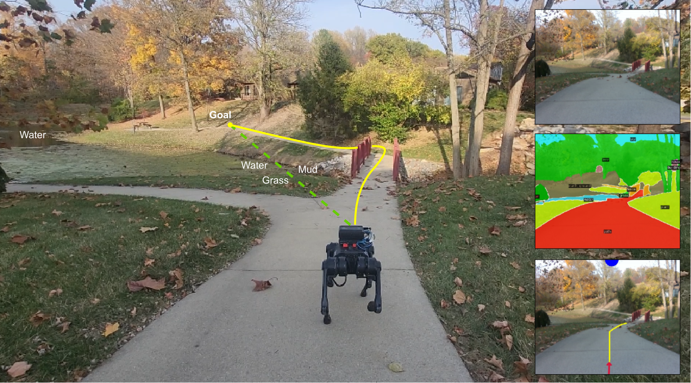
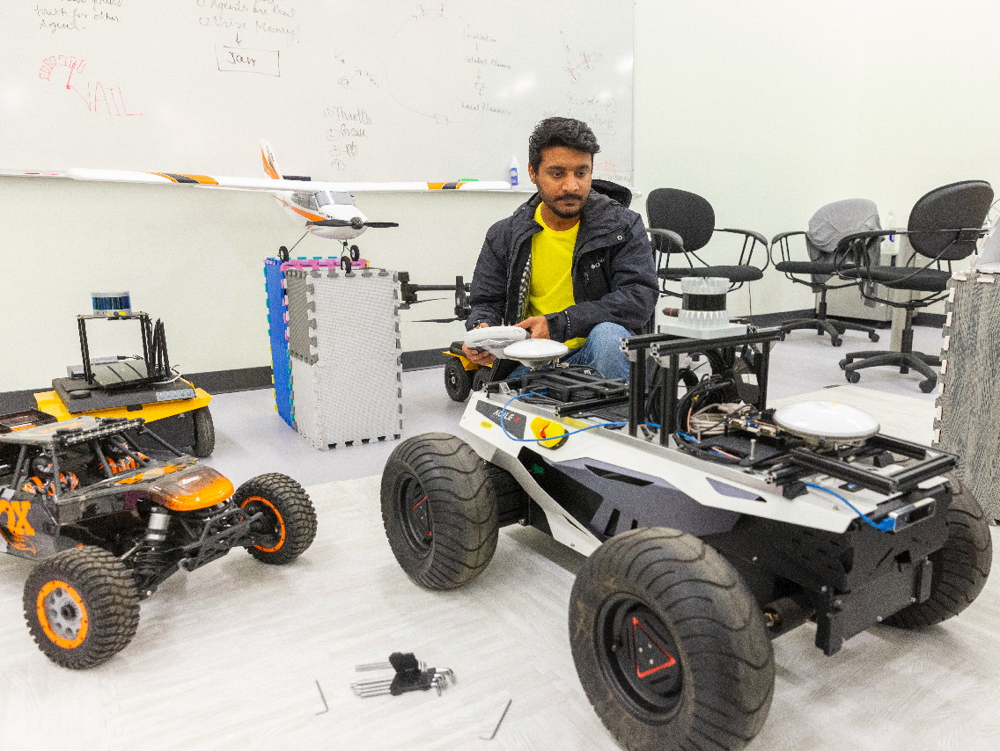
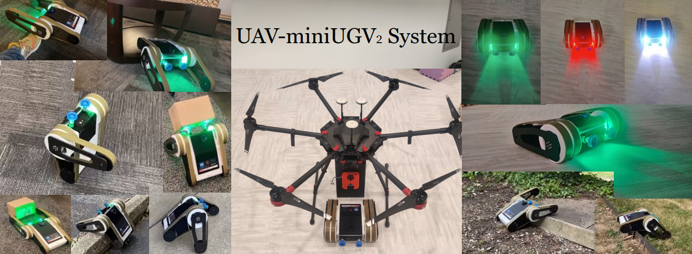
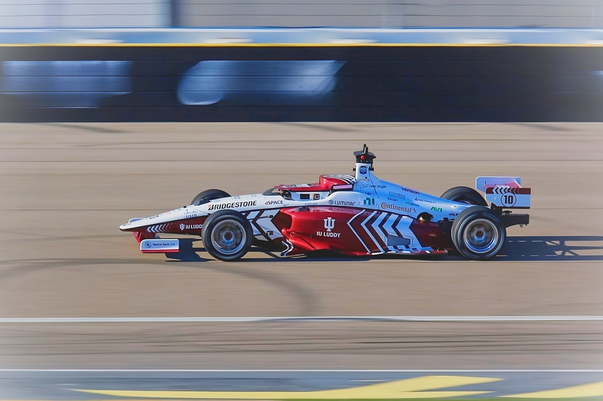
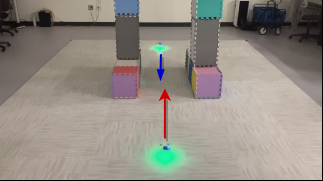

Representation
Visual navigation in image space
POVNav combines semantic understanding, Pareto-optimal decision-making, and visual servoing for navigation in complex environments.
Explore project →
Postdoctoral Research Fellow
School of Mechanical Engineering
Purdue University
I study adaptive robotic intelligence under limits on information, computation, time, and energy. My research connects what a robot can physically do, how it represents the world, and how it chooses its actions.
I am a postdoctoral researcher in the School of Mechanical Engineering at Purdue University, working with Purdue AI Racing. I earned my Ph.D. in Intelligent Systems Engineering at Indiana University Bloomington, advised by Prof. Lantao Liu. Previously, I led the IU–Luddy Autonomous Racing Team and worked on visual navigation, heterogeneous robotic systems, and bounded-rational decision-making.
At Purdue AI Racing, contributing to autonomous racing research and mentoring LiDAR-based localization development.
Completed my Ph.D. in Intelligent Systems Engineering at Indiana University Bloomington.
MiniUGV₂: a compact UAV-deployable tracked robot with manipulation capabilities. Read more →
Navigating the Wild received IJRR Paper of the Season, Q2 2025 Honorable Mention. Read more →

Representation
POVNav combines semantic understanding, Pareto-optimal decision-making, and visual servoing for navigation in complex environments.
Explore project →
Embodiment
MiniUGV₂ combines a UAV-deployable tracked body, articulated arms, sensing, and a magnetic tether interface for confined-space missions.
Explore project →
Policy
A diffusion-based map prediction informs a default policy, while local trajectory sampling allows adaptation when predictions are unreliable.
Explore project →The International Journal of Robotics Research (IJRR), 2025.
Paper of the Season, Q2 2025: Honorable Mention
@article{pushp2025j1,
title = {Navigating the Wild: Pareto-Optimal Visual Decision-Making in Image Space},
author = {D. Pushp and W. Chen and Z. Chen and C. Luo and J. M. Gregory and L. Liu},
journal = {The International Journal of Robotics Research (IJRR)},
year = {2025},
url = {https://arxiv.org/abs/2511.07750}
}
International Symposium on Experimental Robotics (ISER), 2025.
@inproceedings{pushp2025c4,
title = {From Zero to High-Speed Racing: An Autonomous Racing Stack},
author = {H. Jardali and D. Pushp and Y. Yu and M. Ali and I. S. Mohamed and A. Murillo-Gonzalez and P. D. Coen and M. A.-M. Khan and R. C. Pulivendula and S. Park and L. Zhou and L. Liu},
booktitle = {International Symposium on Experimental Robotics (ISER)},
year = {2025},
url = {https://arxiv.org/abs/2512.06892}
}
IEEE/RSJ IROS, 2023.